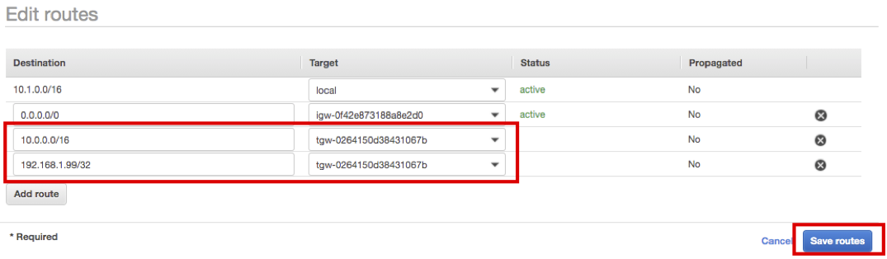
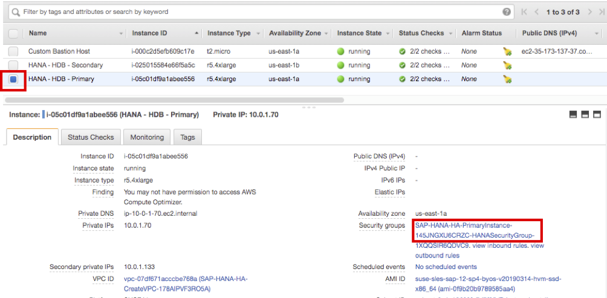
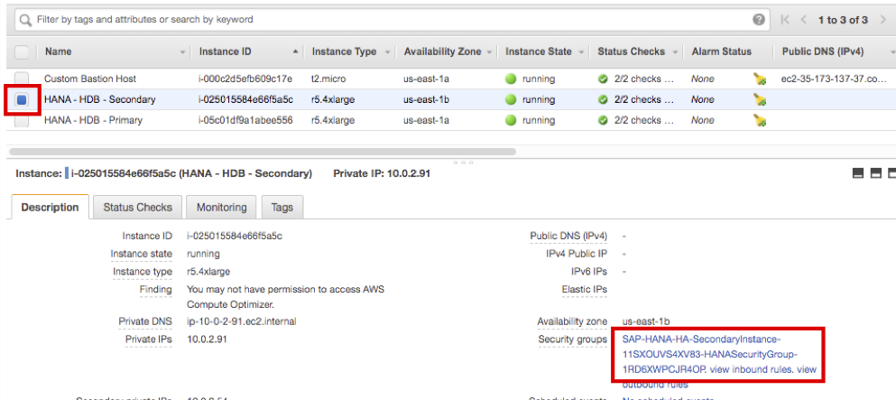
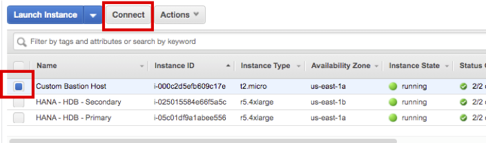
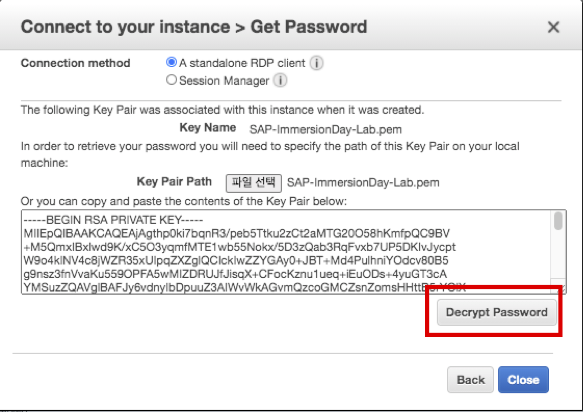
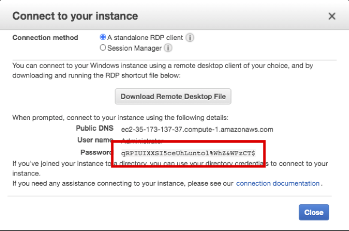

Task 02. Connect to Overlay IP
When configuring High Availability Cluster in Multi-AZ environment, VIP used by Application Server and HANA Database use Overlay IP outside of VPC CIDR. Transit Gateway can be used to access this in other VPCs or OnPremise environment. In this Lab, you are going to create a Custom VPC through CloudFormation, set up a transit gateway, and connect to HANA Database’s Overlay IP through Bastion Host.
This task consists of 5 steps.
- Create a Custom VPC and a Bastion Host using CloudFormation
- Create and configure a Transit Gateway
- Update route table of subnet with HANA Instances
- Update Security Group for HANA Instance
- Test Overlay IP connection at Bastion Host
Create a Custom VPC and a Bastion Host using CloudFormation
- After log in to AWS Management Console, Connect to CloudFormation for Customer VPC
- If Network Configuration setting does not overlap with the existing one, the default setting is used.

- Check two checkboxes of Capabilities at the bottom of the screen and click Create stack.

- CustomVPC stack has been created. Wait until the Status changes CREATE_COMPLTE.

- Connect to EC2 Instance Console. You can see that Bastion Host (Windows Sever 2019) was created on Custom VPC-Public Subnet.
Create and configure a Transit Gateway
Create a transit gateway to associate SAP HANA VPC and Custom VPC.
-
Connect to Transit Gateways Console, create a transit gateway, and associate SAP HANA VPC and Custom VPC. then register the entry for connecting the Overlay IP to Routing Table on Transit Gateway.
-
Click Create Transit Gateway.

-
Enter HANA-TGW in Name Tag, Click Create Transit Gateway. then click Close.

-
Wait until the State of HANA-TGW you just created changes available.

-
To attach SAP HANA VPC and Custom VPC, Connect to Transit Gateways Attachment Console. Click Create Transit Gateway Attachment.

-
Select created HANA-TGW, and enter HANA VPC as Attachment name tag. Choose a VPC ID that starts with SAP-HANA.

-
Select Subnet ID as Private Subnet 1,2 and click the Create attachment at the bottom right. Click the Close.

-
Click Create Transit Gateway Attachment again.

-
Similarly, select HANA-TGW, and enter Custom VPC as Attachment name tag. Select Custom as VPC ID.

-
Select Subnet ID as Custom Public Subnet AZ1, AZ2, and click Create attachment at the bottom right. Click Close button

-
Wait for both attachments to change State as available (After a certain period of time, click the Refresh button to check the State.)

-
Connect to Transit Gateways Route Tables Console and register the routing for Overlay IP.
-
Select created route table and select Routes tab, then click Create static route

-
For CIDR option, enter 192.168.1.99/32.
-
For Choose attachment option, choose HANA VPC and click Create static route.

-
Click Close.
-
You can check that static route for Overlay IP is registered.
Update Instance route table
Updated each route table so that HANA DB Instance and Bastion Host can communicate with each other through Transit Gateway.
- Connect to Route Tables Console
- Firstly, update the route table of HANA DB Instance. Choose Private subnet route table and select Routes tab. then click Edit routes.

- Click Add routes and enter Destination as 10.1.0.0/16, then choose Target as Transit Gateway.
- Choose HANA-TGW and click Save routes.
- Click Close.
- Next, update the route table of Bastion Host. Choose Custom Public Routes and select Routes tab, then click Edit routes.

- Click Add routes and enter Destination as 10.0.0.0/16, then choose Target as Transit Gateway. Choose HANA-TGW
- Click Add routes again, enter Destination as 192.168.1.99/32, then choose Target as Transit Gateway. Choose HANA-TGW
- Confirm both routes are registered and click Save routes. 
- Click Close.
Update Instance Security Group
Allows inbound traffic for Bastion Host to the Security Group of Primary and Secondary HANA DB Instances.
- First, check Bastion Host IP. Connect to EC2 Instance Console. Check the Private IP of Custom Bastion Host (e.g 10.1.3.154)

- Update Primary instance. Choose HANA-HDB-Primary instance and click Security Groups link below. 
- Select Inbound rules tab at the bottom and click Edit inbound rules.
- Click Add rule at the bottom, select All traffic as Type, and enter the CIDR of Bastion Host found above(e.g 10.1.3.154/32)
- Because it is a lab environment, Bastion Host is allowed with All traffic. It is recommended to allow only the necessary ports in a real environment.

- Because it is a lab environment, Bastion Host is allowed with All traffic. It is recommended to allow only the necessary ports in a real environment.
- Click Save rules at the bottom.
- Same as Primary Instance, update Security Group for Secondary Instance. Connect to EC2 Instance Console.
- Choose HANA-HDB-Secondary instance and click the Security Groups link. 
- Select Inbound rules tab at the bottom and click Edit inbound rules.
- Click Add rule at the bottom, select All traffic as Type, and enter the CIDR of Bastion Host found above(e.g 10.1.3.154/32)
- Because it is a lab environment, Bastion Host is allowed with All traffic. It is recommended to allow only the necessary ports in a real environment.
- Because it is a lab environment, Bastion Host is allowed with All traffic. It is recommended to allow only the necessary ports in a real environment.
- Click Save rules at the bottom.
Connect to Bastion Host and Test Overlay IP
Connect to Bastion Host and perform a ping test to see if it is possible to connect to the Overlay IP.
- Connect to EC2 Instance Console and check the Public IP of Custom Bastion Host. (e.g 35.173.137.37)
- Choose Custom Bastion Host and click Connect. 
- Click Get Password.

- Click Select File and select SAP-ImmersionDay-Lab.pem file saved in Lab01.
- The screen below may look different depending on the OS. The screenshot below is a MacBook screen.


- The screen below may look different depending on the OS. The screenshot below is a MacBook screen.
- Click Decrypt Password to confirm Administrator Password.(e.g qRPIUIXXSI5ceUhLuntol%WhZ&WFzCT$)  
- Click Close.
- Connect to Bastion Host using a remote access program.
- When connected successfully, search for Windows PowerShell in the Search window and run it.
- When PowerShell is launched, execute ping 192.168.1.99 to check if communication with Overlay IP is possible.

Shut down the PowerShell and proceed with Task03 while maintaining the remote connection.
© 2020, Amazon Web Services, Inc. or its affiliates. All rights reserved.